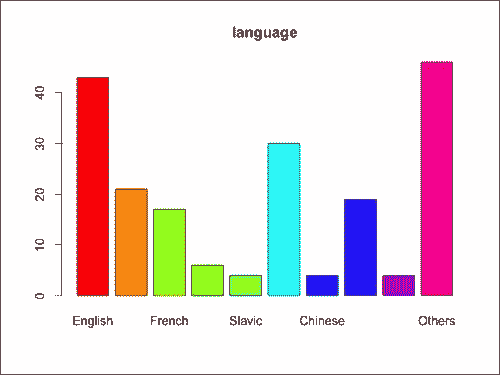
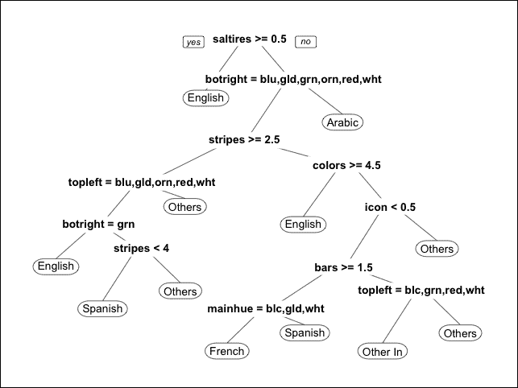
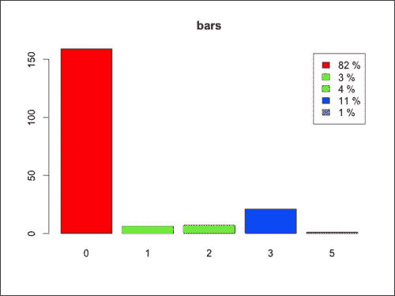
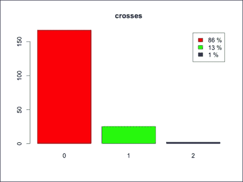
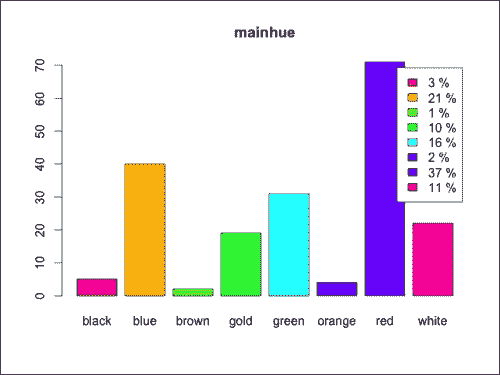
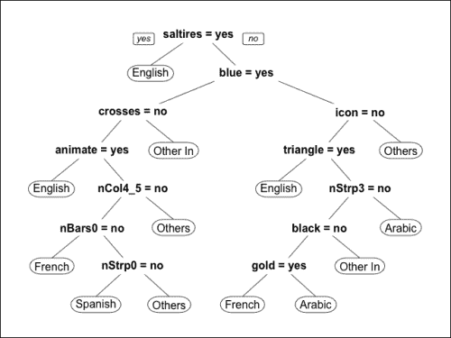
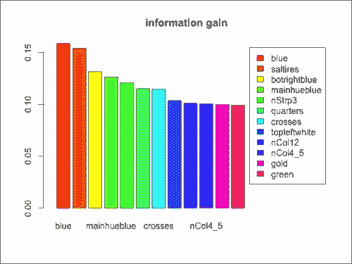

本节展示了我们如何构建原始数据来构建特性。每个国家的数据如下:
- 国旗的照片
- 一些地理数据，如洲、地理象限、区域和人口
- 该国的语言和宗教
目标是建立一个从国旗开始预测国家语言的模型。大多数模型可以处理数字和/或分类数据，所以我们不能使用旗帜的图像作为模型的特征。解决方案是定义一些描述每个旗帜的特征，例如颜色的数量。这样，我们从一个表开始，该表的行对应于国家，列对应于国旗特征。
基于图片建立带有标志属性的矩阵会花费很多时间。幸运的是，我们可以使用包含一些特征的数据集。我们拥有的数据仍然有点杂乱，所以我们需要清理和转换它，以右格式构建一个特征表。
数据集中包含的特征显示了以下信息:
- 旗帜上的颜色
- 旗帜上的图案
- 标志中的一些附加元素，如文本或一些星星
- 一些地理数据，如洲、地理象限、区域和人口
- 该国的语言和宗教
以正确的格式引导表格的步骤如下:
现在，我们可以使用str看到dfFlag的结构:
str(dfFlag)
'data.frame': 194 obs. of 30 variables:
$ V1 : Factor w/ 194 levels "Afghanistan",..: 1 2 3 4 5 6 7 8 9 10 ...
$ V2 : int 5 3 4 6 3 4 1 1 2 2 ...
$ V3 : int 1 1 1 3 1 2 4 4 3 3 ...
$ V4 : int 648 29 2388 0 0 1247 0 0 2777 2777 ...
$ V5 : int 16 3 20 0 0 7 0 0 28 28 ...
$ V6 : int 10 6 8 1 6 10 1 1 2 2 ...
$ V7 : int 2 6 2 1 0 5 1 1 0 0 ...
$ V8 : int 0 0 2 0 3 0 0 0 0 0 ...
$ V9 : int 3 0 0 0 0 2 1 1 3 3 ...
$ V10: int 5 3 3 5 3 3 3 5 2 3 ...
$ V11: int 1 1 1 1 1 1 0 1 0 0 ...
$ V12: int 1 0 1 0 0 0 0 0 0 0 ...
$ V13: int 0 0 0 1 1 0 1 1 1 1 ...
$ V14: int 1 1 0 1 1 1 0 1 0 1 ...
$ V15: int 1 0 1 1 0 0 1 1 1 1 ...
$ V16: int 1 1 0 0 0 1 0 1 0 0 ...
$ V17: int 0 0 0 1 0 0 1 0 0 0 ...
$ V18: Factor w/ 8 levels "black","blue",..:5 7 5 2 4 7 8 7 2 2 ...
$ V19: int 0 0 0 0 0 0 0 0 0 0 ...
$ V20: int 0 0 0 0 0 0 0 0 0 0 ...
$ V21: int 0 0 0 0 0 0 0 0 0 0 ...
$ V22: int 0 0 0 0 0 0 0 0 0 0 ...
$ V23: int 1 1 1 0 0 1 0 1 0 1 ...
$ V24: int 0 0 1 0 0 0 0 0 0 0 ...
$ V25: int 0 0 0 1 0 0 0 1 0 0 ...
$ V26: int 1 0 0 1 0 1 0 0 0 0 ...
$ V27: int 0 1 0 1 0 0 1 0 0 0 ...
$ V28: int 0 0 0 0 0 0 0 0 0 0 ...
$ V29: Factor w/ 7 levels "black","blue",..: 1 6 4 2 2 6 7 1 2 2 ...
$ V30: Factor w/ 8 levels "black","blue",..: 5 7 8 7 7 1 2 7 2 2 ...
dfFlag对象包含30个未定义名称的列。我们有描述包含在flag.description.txt中的数据的文档，这允许我们定义列名。前七列包含一些与标志无关的属性。让我们开始定义一些包含特性名称的向量。第一列是国名。定义名称的步骤如下:
- 定义国家名称:
- 定义三个地理特征的名称:
continent、zone和area : namesGeography <- c('continent', 'zone', 'area') - 定义三个国家公民的姓名特征，包括他们的语言:
namesDemography <- c('population', 'language', 'religion') - 定义一个惟一的向量，它包含按正确顺序排列的七个属性:
namesAttributes <- c(nameCountry, namesGeography, namesDemography)
- 定义定义
bars、stripes、colors : namesNumbers <- c('bars', 'stripes', 'colors') 号的特征名称 - 对于某些颜色，如果标志包含颜色，有一个变量显示
1，否则显示0。定义它们的名字: namesColors <- c('red', 'green', 'blue', 'gold', 'white', 'black', 'orange') - 定义主导色的名称:
nameMainColor <- 'mainhue'
- 定义属性的名称，该属性显示标志中包含多少图案/图形(例如，形状、图片或文本):
namesDrawings <- c( 'circles', 'crosses', 'saltires', 'quarters', 'sunstars', 'crescent', 'triangle', 'icon', 'animate', 'text' )
- 悬空:四个角中的两个中的颜色:
namesAngles <- c('topleft', 'botright') - 定义按正确顺序包含所有名称的
namesFlag:namesFlag <- c(namesNumbers, namesColors, nameMainColor, namesDrawings, namesAngles)
- 设置绑定
namesAttributes和namesFlag的dfFlag列名: names(dfFlag) <- c(namesAttributes, namesFlag)
现在，数据框有了正确的列名。然而，一些列，比如language包含数字而不是属性名，文档显示了数字代表什么。例如，对于语言，1对应于英语，2对应于西班牙语。我们可以使用以下步骤构建一个具有正确格式的数据的数据表:
- 将
dfFlag转换成dtFlag数据表: library(data.table) dtFlag <- data.table(dfFlag)
- 显示
continent栏: dtFlag[1:20, continent] [1] 5 3 4 6 3 4 1 1 2 2 6 3 1 5 5 1 3 1 4 1
continent栏包含一个介于1和6之间的数字，文档显示为1=N.America、2=S.America、3=Europe、4=Africa、5=Asia、6=Oceania。然后，我们定义一个包含大洲的向量: vectorContinents <- c('N.America', 'S.America', 'Europe', 'Africa', 'Asia', 'Oceania') - 将
continent转换为factor，其级别为vectorContinents : dtFlag[, continent := factor(continent, labels=vectorContinents)]
- 与
continent类似，将zone转换为factor : vectorZones <- c('NE', 'SE', 'SW', 'NW') dtFlag[, zone := factor(zone, labels=vectorZones)] - 将
language转换为factor : vectorLanguages <- c( 'English', 'Spanish', 'French', 'German', 'Slavic', 'Other Indo-European', 'Chinese', 'Arabic', 'Japanese/Turkish/Finnish/Magyar', 'Others') dtFlag[, language := factor(language, labels=vectorLanguages)]
- 将
religion转换为factor : vectorReligions <- c( 'Catholic', 'Other Christian', 'Muslim', 'Buddhist', 'Hindu', 'Ethnic', 'Marxist', 'Others' ) dtFlag[, religion := factor(religion, labels=vectorReligions)]
我们来看看dtFlag:
str(dtFlag)
Classes 'data.table' and 'data.frame': 194 obs. of 30 variables:
$ name : Factor w/ 194 levels "Afghanistan",..: 1 2 3 4 5 6 7 8 9 10 ...
$ continent : int 5 3 4 6 3 4 1 1 2 2 ...
$ zone : Factor w/ 4 levels "NE","SE","SW",..: 1 1 1 3 1 2 4 4 3 3 ...
$ area : int 648 29 2388 0 0 1247 0 0 2777 2777 ...
$ population: int 16 3 20 0 0 7 0 0 28 28 ...
$ language : int 10 6 8 1 6 10 1 1 2 2 ...
$ religion : int 2 6 2 1 0 5 1 1 0 0 ...
$ bars : int 0 0 2 0 3 0 0 0 0 0 ...
$ stripes : int 3 0 0 0 0 2 1 1 3 3 ...
$ colors : int 5 3 3 5 3 3 3 5 2 3 ...
$ red : int 1 1 1 1 1 1 0 1 0 0 ...
$ green : int 1 0 1 0 0 0 0 0 0 0 ...
$ blue : int 0 0 0 1 1 0 1 1 1 1 ...
$ gold : int 1 1 0 1 1 1 0 1 0 1 ...
$ white : int 1 0 1 1 0 0 1 1 1 1 ...
$ black : int 1 1 0 0 0 1 0 1 0 0 ...
$ orange : int 0 0 0 1 0 0 1 0 0 0 ...
$ mainhue : Factor w/ 8 levels "black","blue",..: 5 7 5 2 4 7 8 7 2 2 ...
$ circles : int 0 0 0 0 0 0 0 0 0 0 ...
$ crosses : int 0 0 0 0 0 0 0 0 0 0 ...
$ saltires : int 0 0 0 0 0 0 0 0 0 0 ...
$ quarters : int 0 0 0 0 0 0 0 0 0 0 ...
$ sunstars : int 1 1 1 0 0 1 0 1 0 1 ...
$ crescent : int 0 0 1 0 0 0 0 0 0 0 ...
$ triangle : int 0 0 0 1 0 0 0 1 0 0 ...
$ icon : int 1 0 0 1 0 1 0 0 0 0 ...
$ animate : int 0 1 0 1 0 0 1 0 0 0 ...
$ text : int 0 0 0 0 0 0 0 0 0 0 ...
$ topleft : Factor w/ 7 levels "black","blue",..: 1 6 4 2 2 6 7 1 2 2 ...
$ botright : Factor w/ 8 levels "black","blue",..: 5 7 8 7 7 1 2 7 2 2 ...
- attr(*, ".internal.selfref")=<externalptr>
数据格式正确。尽管我们必须正确地转换数据，但这仍然比手动定义特征花费更少的时间。
在定义了特性之后，我们可以探索它们并确定它们与问题的关系。在本节中，您将看到如何浏览数据和定义一些简单的图表。
让我们从一个特性开始，例如，mainhue，它显示了旗帜的主色。我们想要识别最常见的主色，为此，我们可以使用table来计算每个可能值的出现次数。我们可以从dtFlag中提取mainhue列，并对其应用table:
table(dtFlag[, mainhue])
black blue brown gold green orange red white
5 40 2 19 31 4 71 22
三种最常见的主色是红色、蓝色和绿色。请注意，我们可以将table放在方括号内，用更干净的代码dtFlag[, table(mainhue)]获得相同的结果。
我们如何对任何其他列执行相同的操作呢？首先，让我们定义一个名为nameCol的字符串，它包含我们想要分析的列的名称。为了访问该列，我们可以在dtFlag的方括号内使用get(nameCol):
nameCol <- 'mainhue'
dtFlag[, table(get(nameCol))]
这种符号非常有用，因为我们可以很容易地将它包含在使用名称字符串的函数中，可视化所有其他列的相同结果:
listTableCol = lapply(
namesAngles, function(nameCol){
dtFlag[, table(get(nameCol))]
})
listTableCol[[1]]
black blue gold green orange red white
12 43 6 32 4 56 41
如果我们想制作一个图表呢？我们可以使用barplot构建一个直方图。让我们首先提取每个频率值的表格:
nameCol <- 'language'
freqValues <- dtFlag[, table(get(nameCol))]
freqValues 方法包含列表中使用任意一种语言的国家的数量。我们可以使用names提取一个语言向量:
现在，我们有了构建直方图所需的所有数据(如果你没有读过第3章，一个简单的机器学习分析，请参见barplot的文档)。此外，我们可以使用rainbow定义颜色:
barplot(
height = freqValues,
names.arg = names(freqValues),
main = nameCol,
col = rainbow(length(freqValues)),
ylab = 'number of flags'
)
获得的直方图如下:

如果我们想探究一个属性，这个图表非常有用。为了只用一行代码就做到这一点，我们可以定义一个函数，为一个通用列nameCol构建这个图表。另外，我们可以添加legend来显示百分比。为了显示legend，我们计算percValues，它包含显示该值的行的百分比，并将其用作legend.text参数，如下所示:
barplotAttribute <- function(dtData, nameCol)
{
# define the frequency
freqValues <- dtData[, table(get(nameCol))]
# define the percentage
percValues <- freqValues / sum(freqValues)
percValues <- round(percValues * 100)
percValues <- paste(percValues, '%')
# generate the histogram
barplot(
height = freqValues,
names.arg = names(freqValues),
main = nameCol,
col = rainbow(length(freqValues)),
legend.text = percValues,
ylab = 'number of flags'
)
}让我们将函数应用到另一列，例如stripes:
barplotAttribute(dtFlag, 'stripes')
使用一个for循环，我们可以为每个标志属性生成相同的图表。我们需要时间来查看每个图表和以下图表之间的结果，所以我们使用readline来停止程序。脚本暂停，直到我们在控制台中按下回车。这样，我们可以非常快速地浏览所有功能，如下所示:
for(nameCol in namesFlag)
{
barplotAttribute(dtFlag, nameCol)
readline()
}通过这几行代码，我们观察到了每个特性的值出现的频率。
另一个快速探索是，给定一种颜色，计算包含该颜色的标志的数量。例如，让我们数一数有红色部分的旗帜。有一个名为red的属性，如果标志包含红色部分，其值为1，否则为0。如果我们对所有列值求和，我们将获得包含红色部分的标志总数，如下所示:
dtFlag[, sum(red)]
[1] 153
dtFlag[, sum(get('red'))]
[1] 153
正如我们之前看到的，我们可以在方括号内使用get。我们如何对所有常见的颜色进行同样的处理呢？namesColors向量包含所有颜色属性的名称，如下所示:
namesColors
[1] "red" "green" "blue" "gold" "white" "black" "orange"
namesColors的第一个元素是red，所以我们可以用它来计数包含红色的标志:
dtFlag[, sum(get(namesColors[1]))]
[1] 153
我们可以使用sapply(参见文档)对namesColors的每个元素应用一个函数。在这种情况下，该函数计算包含特定颜色的标志的数量:
sapply(namesColors, function(nameColor){
dtFlag[, sum(get(nameColor))]
})
red green blue gold white black orange
153 91 99 91 146 52 26
最常见的颜色是红色和绿色。
到目前为止，我们已经探索了旗帜的特征；下一步是看它们与这个国家的语言有什么关系。一个快速的方法是使用决策树(参见第三章、一个简单的机器学习分析)。
首先，让我们导入包来生成并可视化决策树:
library('rpart')
library('rpart.plot')决策树模型需要一个定义变量之间关系的公式对象。这种情况下，公式为语言~特征1 +特征2 + … 。我们可以通过使用一个for 循环将namesFlag中包含的所有名称添加到中来构建公式，如下所示:
formulaRpart <- 'language ~ '
for(name in namesFlag){
formulaRpart <- paste(formulaRpart, '+', name)
}
formulaRpart <- formula(formulaRpart)我们可以使用rpart构建模型，使用prp可视化树:
tree <- rpart(formula=formulaRpart, data=dtFlag)
prp(tree)

树的一些节点看不清楚。例如，saltires如果旗帜有斜线，则显示1,否则显示0。第一个树节点表示 saltires > = 0.5 条件，因此左边的标志有一个saltire。这反映了要素的格式不正确，因此下一步将是转换要素。
首先，让我们定义一个名为dtFeatures的新数据表，它包含特性和结果。从现在开始，我们将修改dtFeatures,直到所有的特征都是正确的格式，如图所示:
dtFeatures <- dtFlag[, c('language', namesFlag), with=FALSE]让我们定义一个函数来可视化表格。我们将重用此函数来跟踪功能转换过程中的进度，如下所示:
plotTree <- function(dtFeatures){
formulaRpart <- paste(names(dtFeatures)[1], '~')
for(name in names(dtFeatures)[-1]){
formulaRpart <- paste(formulaRpart, '+', name)
}
formulaRpart <- formula(formulaRpart)
tree <- rpart(formula=formulaRpart, data=dtFeatures)
prp(tree)
}
plotTree(dtFeatures)图表和之前一模一样。
到目前为止，我们已经看到了一些探索特性的技术。数据探索允许我们研究数据的本质，这是清理当前特性和定义其他特性的起点。此外，我们已经构建了一些函数，这些函数允许我们只用一行代码就可以生成一些图表。我们可以使用这些函数来跟踪特征转换。
我们的特征是描述旗帜的属性，其中一些可能格式不正确。在本节中，我们将了解每个特性，并在必要时对其进行转换。
为了跟踪我们已经处理过的特征，让我们开始定义一个空向量namesProcessed，它包含我们已经处理过的特征。当我们转换一个特征时，我们将特征名称添加到namesProcessed:
让我们从数字列开始，比如red，它有两种可能的结果:0，如果标志包含红色，否则为1。red变量定义了一个属性，所以它应该是分类的而不是数字的。然后，我们可以将red转换成一个特征，如果颜色是红色，则为yes，否则为no。
如果我们看一下每个特性的图表，我们会注意到有些图表只显示两个值，它们总是0和1。为了将它们分别转换成yes和no格式，我们可以使用一个for循环。对于namesFlag中的每个特征，我们检查是否只有两个可能的值。如果是这样，我们将特征转换成因子。先说red:
我们可以检查nameFeat是否显示两个值:
length(unique(dtFeatures[, get(nameFeat)])) == 2
在这种情况下，答案是TRUE，因此我们可以生成一个向量，其中包含分别用于0和1的与no和yes相同的列。为此，我们使用factor，它指定标签为no和yes，如图所示:
vectorFactor <- dtFeatures[
, factor(get(nameFeat), labels=c('no', 'yes'))
]
head(vectorFactor)
[1] yes yes yes yes yes yes
Levels: no yes
现在，我们可以使用一个for循环来转换每个显示两种可能结果的特征。对于每个特性，我们使用if检查它是否只有两个值。在我们生成vectorFactor之后，我们使用方括号内的eval覆盖旧列。做dtFeatures[, eval('red') := vectorFactor]和dtFeatures[, red := vectorFactor]一样，如下图所示:
for(nameFeat in namesFlag){
if(length(unique(dtFeatures[, get(nameFeat)])) == 2){
vectorFactor <- dtFeatures[
, factor(get(nameFeat), labels=c('no', 'yes'))]
dtFeatures[, eval(nameFeat) := vectorFactor]
namesProcessed <- c(namesProcessed, nameFeat)
}
}再来看看我们还没有改造的功能。namesFlag特征包含所有初始特征，而namesProcessed包含我们已经转换的特征。为了可视化不在namesProcessed中的特征，我们可以使用setdiff，它是一个函数，给出在第一个向量中而不在第二个向量中的元素，如下所示:
setdiff(namesFlag, namesProcessed)
还有很多特征我们还没有分析。例如，bars是一个数字属性，显示标志中竖条的数量。如果我们使用bars作为数字特征，模型将识别语言和模型之间的关系。所有西班牙语国家的国旗都包含零个或三个竖条，因此model可以学习类似“只有当我们的竖条少于四个时，语言才能是西班牙语。”然而，没有一个西班牙语国家的国旗上有1或2个横杠。一种解决方案是根据条形的数量对国家/地区进行分组，如下所示:
barplotAttribute(dtFeatures, 'bars')

图表显示，具有大量标记的组是 0 和 3 条。因此，分组可以如下:
我们可以定义一个名为nBars0的新列，如果旗帜没有竖线，它等于TRUE:
dtFeatures[, nBars0 := bars == 0]
同样，我们定义nBars3，对于有三个横条的标志来说就是TRUE。我们不需要定义带有剩余标志的列，因为通过检查nBars0和nBars3是否为FALSE已经可以识别出它们:
dtFeatures[, nBars1_2 := bars %in% c(1, 2)]
dtFeatures[, nBars3 := bars == 3]
让我们删除最初的bars列，并将bars添加到namesProcessed:
dtFeatures[, bars := NULL]
namesProcessed <- c(namesProcessed, 'bars')
我们执行的操作被称为离散化，因为我们从一个数字开始生成了一些离散特征。
同样，我们可以将转换为stripes和colors:
barplotAttribute(dtFeatures, 'stripes')
dtFeatures[, nStrp0 := stripes == 0]
dtFeatures[, nStrp2 := stripes == 2]
dtFeatures[, nStrp3 := stripes == 3]
dtFeatures[, nStrp5 := stripes == 5]
dtFeatures[, stripes := NULL]
namesProcessed <- c(namesProcessed, 'stripes')
barplotAttribute(dtFeatures, 'colors')
dtFeatures[, nCol12 := colors %in% c(1, 2)]
dtFeatures[, nCol3 := colors == 3]
dtFeatures[, nCol4_5 := colors %in% c(4, 5)]
dtFeatures[, colors := NULL]
namesProcessed <- c(namesProcessed, 'colors')
让我们来看看namesDrawings中包含的我们还没有处理的特性:
for(nameCol in setdiff(namesDrawings, namesProcessed)){
barplotAttribute(dtFeatures, nameCol)
readline()
}
在所有这些功能中，大多数标志显示0。因此，我们可以将标志分为两类:0和其余。我们正在定义一个新的分类变量，如果值大于0则为yes，否则为 no。该过程被称为二进制化，因为我们将一些数字特征转换为只显示两个值的分类特征，如下所示:
for(nameCol in setdiff(namesDrawings, namesProcessed)){
dtFeatures[, eval(nameCol) := ifelse(get(nameCol) > 0, 'yes', 'no')]
namesProcessed <- c(namesProcessed, nameCol)
}让我们探索一下其余的特性，如下面的代码所示:
for(nameCol in setdiff(namesFlag, namesProcessed)){
barplotAttribute(dtFeatures, nameCol)
readline()
}获得的图表如下:

剩下的三个特征是topleft、botright和mainhue。它们都是分类的，并显示两个以上的可能值。例如，mainhue有八个选项。然而，只有少数旗帜以black、brown或orange为主色调。我们没有足够的信息来考虑不太常见的颜色。在这种情况下，我们可以为它们定义一个名为dummy variable的新分类变量。我们可以决定用至少15个标志为每种可能的颜色定义一个虚拟变量。topleft和botright的情况与相似，所以我们可以用同样的方式对它们进行转换，如图所示:
namesToDummy <- c("topleft", "botright", "mainhue")
for(nameCol in namesToDummy){
frequencyColors <- dtFeatures[, list(.N), by=nameCol]
for(color in frequencyColors[N > 20, get(nameCol)]){
nameFeatNew <- paste(nameCol, color, sep='')
dtFeatures[, eval(nameFeatNew) := get(nameCol) == color]
}
dtFeatures[, eval(nameCol) := NULL]
namesProcessed <- c(namesProcessed, nameCol)
}现在，我们已经改造了所有的功能。然而，我们已经定义的一些新列属于logical类。最好将它们可视化为显示yes或no的分类属性，因此最好转换它们，如下所示:
for(nameCol in names(dtFeatures)){
if(dtFeatures[, class(get(nameCol))] == 'logical'){
print(nameCol)
dtFeatures[, eval(nameCol) := ifelse(get(nameCol), 'yes', 'no')]
}
}让我们使用下面的代码来看看决策树是如何变化的:
获得的图表如下:

决策树类似于前面的树。然而，决策树的每个节点都在检查一个条件，其结果是yes和no。
在本章中，我们已经看到了三种转换特性的方式:
- 离散化:从一个数字变量开始，我们将所有可能的值分组。然后，对于每个集合，我们定义一个新的变量，如果数值变量属于该集合，则显示
yes，否则显示no。 - 二进制化:从一个数值变量开始，我们通过只定义两个集合来离散化一个数值变量。我们定义一个阈值，并检查变量是高于还是低于阈值。
- 虚拟:从分类变量开始，我们确定最常见的结果。然后，对于每个常见结果，我们定义一个新变量，如果变量等于值，则显示
yes，否则显示no。
在前面的部分，我们定义了不同的特性。但是所有这些真的与问题相关吗？有一些被称为嵌入式模型的技术可以自动选择最相关的特性。我们还可以使用不同的功能集构建相同的机器学习模型，然后选择性能更好的功能集。这两种选择都不错，尽管它们需要大量的计算能力。
另一种方法是使用过滤器，这是一种识别最相关特征的技术。我们在应用任何机器学习模型之前使用过滤器，通过这种方式，我们削减了算法的大量计算成本。一些滤波器分别考虑每个特征，并且计算效率非常高。
一个简单的过滤器是皮尔逊相关系数，它是变量之间线性关系的一种度量。相关性是一个介于-1和1之间的数字，这两个极值表达了两个变量之间清晰的线性关系。绘制图表时，所有点都在同一条线上。相关性为0表示两个变量之间没有线性相关性。相关系数越高，线性关系越强。在我们的例子中，我们可以测量每个标志属性和语言之间的相关性，并挑选相关性模块较高的属性。
另一种分别考虑每个特征的技术是信息增益比。让我们假设我们想要构建一个模型，而对旗帜一无所知。在这种情况下，我们能做的最好的事情就是确定最通用的语言，并假设每个国家都使用该语言。如果我们只知道哪些旗帜包含红色呢？模型肯定会比没有任何信息要好。好多少？特性的信息增益比是一个量化增加特性所带来的改进的指标。
相关性和信息增益比分别考虑每个特征，因此完全忽略了它们之间的相互作用。例如，我们可以有两个对语言有很大影响的特征，它们彼此之间有很强的相关性，以至于它们包含相同的信息。让我们假设我们已经在模型中包含了两个特性中的一个。添加另一个不会给提供任何进一步的信息，尽管它本身是高度相关的。如果两个特征之间的关系是线性的，我们就说多重共线性。
在其他情况下，我们有两个特性，如果分开来看有一点相关性，如果放在一起看会有很大的影响。如果我们使用这种过滤器对特征进行排序，我们会将它们都排除在外，从而丢失一些有用的信息。
对特征进行分级的替代方法是识别相关的特征组合。一种技术是主 成分分析 ( PCA )，它是基于特征之间的相关性。从特征开始，PCA定义了一组称为主成分的变量，它们彼此线性独立。主成分的数量等于或小于特征的数量，并且通过方差对成分进行排序。然后，可以选择具有高方差的组件子集。然而，PCA有局限性，因为它仅基于线性关系，并且它不考虑预测事物的属性(在我们的例子中是语言)。
有不同的技术，我们在本章中使用的是信息增益比，因为它简单而有意义。r为我们提供了FSelector 包，其中包含了用于特性选择的不同工具。该软件包要求您在计算机上安装JRE，如下所示:
install.packages('FSelector')
library('FSelector')让我们构建包含所有特性名称的namesFeatures向量。然后，我们可以使用information.gain函数计算它们的信息增益比，如图所示:
namesFeatures <- names(dtFeatures)[-1]
dfGains <- information.gain(language~., dtFeatures)
dfGains 方法是一个带有名为attr_importance的字段的数据帧。特性名是行名，所以让我们添加另一个包含名的列:
dfGains$feature <- row.names(dfGains)
让我们将数据框转换成数据表:
dtGains <- data.table(dfGains)
为了查看最相关的功能，我们可以按相关性对它们进行排序:
dtGains <- dtGains[order(attr_importance, decreasing = T)]
head(dtGains)
attr_importance feature
1: 0.1583055 blue
2: 0.1537296 saltires
3: 0.1313155 botrightblue
4: 0.1262545 mainhueblue
5: 0.1205012 nStrp3
6: 0.1149405 quarters
blue和saltires特性定义了非常相关的属性。为了直观显示最相关的特性，我们可以构建一个包含前12个属性的图表，如下所示:
dtGainsTop <- dtGains[1:12]
barplot(
height = dtGainsTop[, attr_importance],
names.arg = dtGainsTop[, feature],
main = 'information gain',
col = rainbow(nrow(dtGainsTop)),
legend.text = dtGainsTop[, feature],
xlim=c(0, 20)
)
获得的直方图如下:

既然我们已经定义了特性排名，我们就能够从最相关的特性中构建一个模型。我们可以包括所有相关性高于所选阈值的特征，或者从顶部开始挑选定义的个特征。然而，我们仍然没有考虑到特征之间的相互作用。例如，在顶级特性中，我们的有the flag contains the blue、blue is the main color和the bottom right is blue。虽然都很相关，但都是关于blue的，所以是多余的，我们可以排除其中一个。
总之，过滤器是对特征进行分级的快速且有用的方法，但是我们在构建模型时必须非常小心地使用它们。